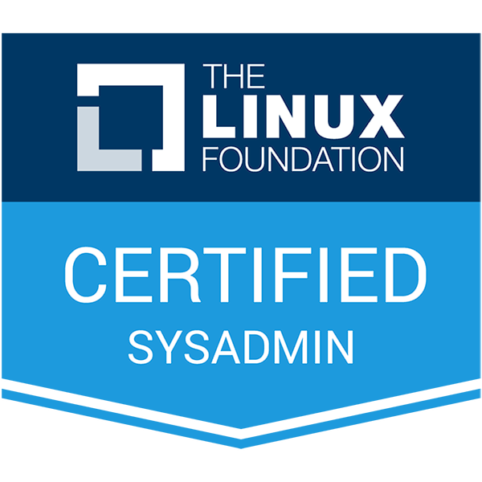

Certifications
Linux Foundation Certified System Administrator (LFCS)

Certificate ID: LF-divp8lh44g
Date Obtained: September 2025
Description: This certification demonstrates my skills in Linux system
administration, including installation, configuration, and
troubleshooting of Linux systems.
View Certificate (PDF)
Verify on Credly ↗